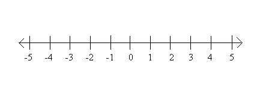
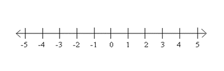

Foundations of College Algebra
The inequality symbols are:
\(<\) means “less than”
\(>\) means “greater than”
\(\leq\) means “less than or equal to”
\(\geq\) means “greater than or equal to”
To graph an inequality in one variable, e.g. \(x < a\), on a number line:
Put a filled-in circle for “or equal to” over \(a\) or an open circle over \(a\) otherwise.
Shade to the left of the circle for “less than” or to the right for “greater than”.
Graph on the number line.
\(x \leq 1\), \(x < 5\), \(x > - 1\)

Graph on the number line.
\(x > 2\), \(x < - 3\), \(x \geq - 1\)
For any numbers \(a\), \(b\), and \(c\), if \(a < b\) then \(a + c < b + c\).
Subtraction is covered by this rule too.
This works for all inequality symbols.
Solve the inequality. Graph the solution set. Write the answer in set notation.
\[n - \frac{1}{2} \leq \frac{5}{8}\]

Solve the inequality. Graph the solution set. Write the answer in set notation.
\[u + 25 > 21\]
For any real numbers \(a\), \(b\), \(c\):
if \(a < b\) and \(c > 0\), then \(\frac{a}{c} < \frac{b}{c}\) and \(ac < bc.\)
If \(a < b\) and \(c < 0\), then \(\frac{a}{c} > \frac{b}{c}\) and \(ac > bc.\)
When we divide or multiply an inequality by a:
positive number, the inequality stays the same.
negative number, the inequality reverses.
Solve the inequality. Graph the solution set. Write the answer in set notation.
\[- 8q < 32\]
Solve the inequality. Graph the solution set. Write the answer in set notation.
\[- 7r \leq - 35\]
Solve the inequality. Write each answer using set notation.
\(4m \leq 9m + 17\)
\(8p + 3(p - 12) > 7p - 28\)
Solve the inequality. Write each answer using set notation.
\(3q \geq 7q - 23\)
\(6u + 8(u - 1) > 10u + 32\)
An interval is a set of numbers between two numbers (possibly \(\infty\) or \(- \infty\)) called endpoints.
Brackets denote that an endpoint is included in the interval.
Parentheses indicate that an endpoint is not included in the interval.
| Set | Interval |
|---|---|
| \[\mathbf{\{ x|x < a\}}\] | \[( - \infty,a)\] |
| \[\mathbf{\{ x|x > a\}}\] | \[(a,\infty)\] |
| \[\mathbf{\{ x|x \leq a\}}\] | \[( - \infty,a\rbrack\] |
| \[\mathbf{\{ x|x \geq a\}}\] | \[\lbrack a,\infty)\] |
| \[\mathbf{\{ x|a < x < b\}}\] | \[(a,b)\] |
| \[\mathbf{\{ x|a \leq x \leq b\}}\] | \[\lbrack a,b\rbrack\] |
| \[\mathbf{\{ x|a < x \leq b\}}\] | \[(a,b\rbrack\] |
| \[\mathbf{\{ x|a \leq x < b\}}\] | \[\lbrack a,b)\] |
Graph the solution set of each inequality on a number line and then write it in interval notation.
\(\left\{ x \middle| x \leq - 4 \right\}\)
\(\{ x|x < - \frac{2}{3}\}\)
\(\{ x| - 3 < x \leq 4\}\)
Graph the solution set of each inequality on a number line and then write it in interval notation.
\(\left\{ x \middle| x > 2 \right\}\)
\(\{ x|2 \leq x < 5\}\)